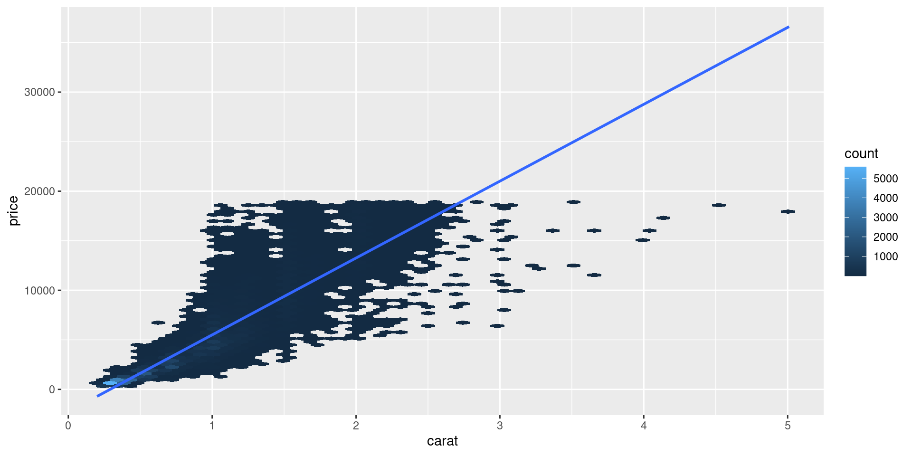
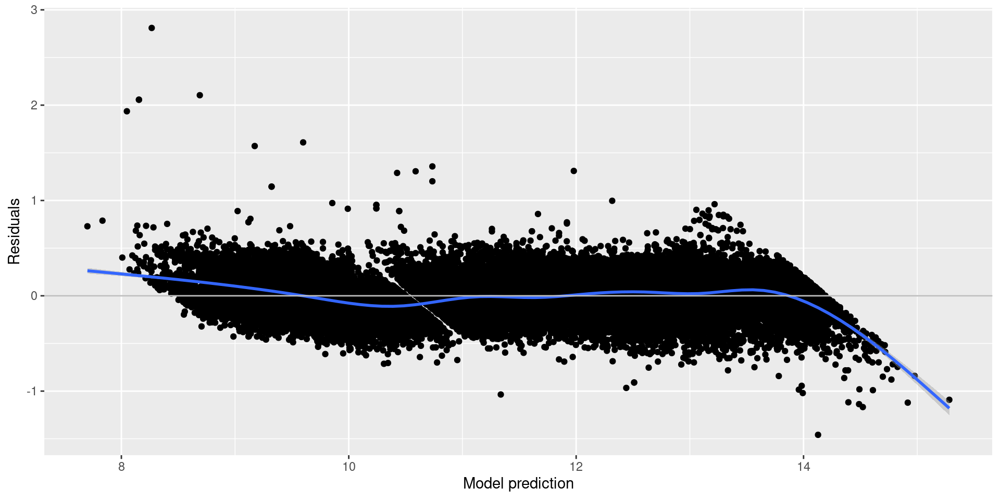
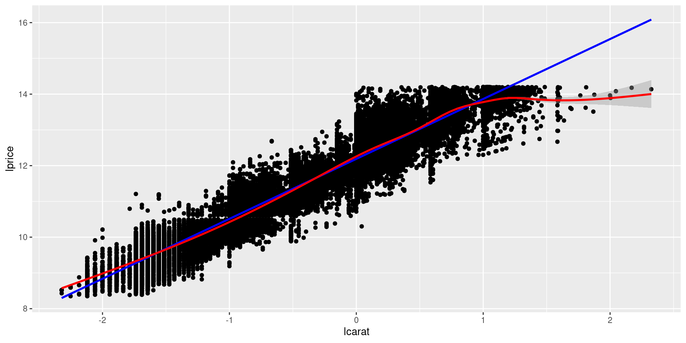
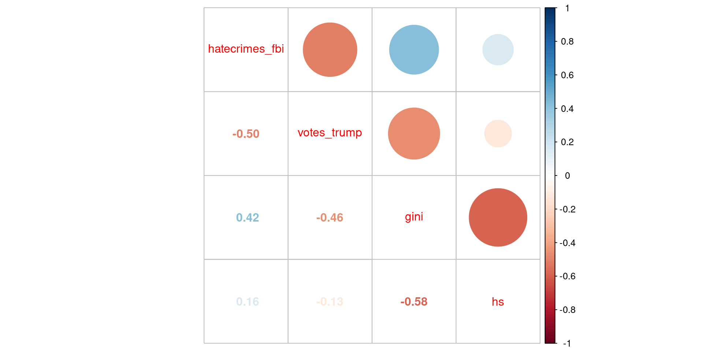
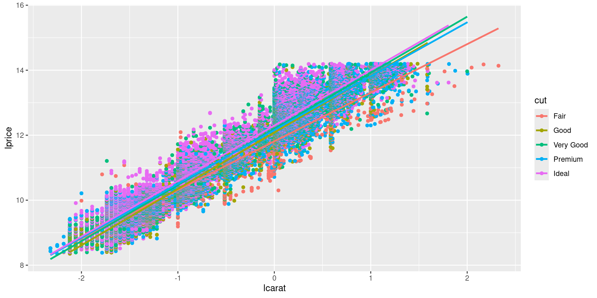

library(corrplot)
library(coefplot)
library(ggpubr)
library(gapminder)
library(hexbin)
library(modelr)
library(multcomp)
library(tidyverse)Modern Statistical Computing
5. Basic models
David Rossell
Pompeu Fabra University
Reproducing these lecture notes
Load the required R packages
We also load auxiliary routines stored at routines.R (directory code)
You can also source files from RStudio (Code -> Source File)
Models
George Box’s famous mantra
All models are wrong, but some are useful
Its less well-known context
Now it would be very remarkable if any system existing in the real world could be exactly represented by any simple model. However, cunningly chosen parsimonious models often do provide remarkably useful approximations. For example, the law PV = RT relating pressure P, volume V and temperature T of an “ideal” gas via a constant R is not exactly true for any real gas, but it frequently provides a useful approximation and furthermore its structure is informative since it springs from a physical view of the behavior of gas molecules.
For such a model there is no need to ask the question “Is the model true?”. If “truth” is to be the “whole truth” the answer must be “No”. The only question of interest is “Is the model illuminating and useful?”.
Another quote by Box (he had many!)
Statisticians, like artists, have the bad habit of falling in love with their models
Meaning that it’s important to check whether the model fits the main features of the data
Linear models
Models help interpret what’s going on in a dataset
\[ y_i = \beta_0 + \sum_{j=1}^p \beta_j x_{ij} + \epsilon_i \] where \(\epsilon_i \sim N(0,\sigma^2)\) indep \(i=1,\ldots,n\)
lmfits a linear regression by least-squares in Rglmfits generalized linear models (for non-normal outcomes, e.g. binary)gamfits generalized additive models
\[ y_i= \sum_{j=1}^p f_j(x_{ij}) + \epsilon_i \mbox{, unknown } f_j \]
Reminder
\[y= \begin{pmatrix} y_1 \\ \ldots \\ y_n \end{pmatrix}; X=\begin{pmatrix} 1 & x_{11} & \ldots & x_{1p} \\ \ldots \\ 1 & x_{n1} & \ldots & x_{np} \end{pmatrix}= \begin{pmatrix} x_1^T \\ \ldots \\ x_n^T \\ \end{pmatrix} \]
Then (assuming \(X^TX\) is invertible) \[\hat{\beta}= (X^T X)^{-1} X^T y= \arg\min_\beta \sum_{i=1}^n (y_i - x_i^T \beta)^2\]
Further, if the model assumptions hold
\[\hat{\beta} \sim N(\beta, V); V= \sigma^2 (X^T X)^{-1}\] Which gives confidence intervals and P-values, e.g. \(\hat{\beta}_j \pm 1.96 \sqrt{v_{jj}}\)
Reminder
Sometimes we’re interested in linear combinations of parameters
Result. Let \(Z \sim N(\mu, V)\) be a \(p\)-dimensional Normal distribution, and \(C\) a \(q \times p\) matrix with full rank \(q \leq p\). Then \[ W= C Z \sim N(C \mu, C V C^T) \] is a \(q\)-dimensional normal
Example. We seek a 95% CI for \(\beta_2 - \beta_1\). Let \(C= \begin{pmatrix} -1 & 1 & 0 & \ldots & 0 \\ \end{pmatrix}\) Then \[C \begin{pmatrix} \hat{\beta}_1 \\ \hat{\beta}_2 \\ \ldots \\ \hat{\beta}_p \end{pmatrix} = \hat{\beta}_2 - \hat{\beta}_1 \sim N(\beta_2 - \beta_1, \sigma^2 C (X^T X)^{-1} C^T)\]
Example. Diamonds data
What drives diamond prices? Exploration suggests that low-quality diamonds are more expensive (worst diamond color is J (yellow-ish), worst clarity is l1)


Diagnosing the issue
Price is strongly associated with carats (diamond weight)
Carats also associated with cut, color and clarity
The most important assumption in a linear model: linearity!
log2 facilitates interpretation (+1 in log2 scale \(\Rightarrow \times 2\) in original scale)
Fit linear model and save residuals
Recall that worst diamond color is J (yellow-ish), worst clarity is l1

Fitting the full model
Second model has better \(R^2\) coefficient. Careful though, comparison not fully reliable due to over-fitting (to be discussed)
Many statistically signif. coefficients in 2nd model
Call:
lm(formula = lprice ~ lcarat + cut + color + clarity, data = diamonds2)
Residuals:
Min 1Q Median 3Q Max
-1.45867 -0.12459 -0.00033 0.12033 2.81005
Coefficients:
Estimate Std. Error t value Pr(>|t|)
(Intercept) 12.200915 0.001685 7242.225 < 2e-16 ***
lcarat 1.883718 0.001129 1668.750 < 2e-16 ***
cut.L 0.174154 0.003396 51.284 < 2e-16 ***
cut.Q -0.050660 0.002989 -16.950 < 2e-16 ***
cut.C 0.019446 0.002595 7.494 6.77e-14 ***
cut^4 -0.002253 0.002079 -1.084 0.278
color.L -0.634174 0.002925 -216.828 < 2e-16 ***
color.Q -0.137955 0.002687 -51.335 < 2e-16 ***
color.C -0.021328 0.002515 -8.481 < 2e-16 ***
color^4 0.017098 0.002310 7.403 1.35e-13 ***
color^5 -0.003176 0.002182 -1.455 0.146
color^6 0.003450 0.001984 1.739 0.082 .
clarity.L 1.322709 0.005161 256.274 < 2e-16 ***
clarity.Q -0.350630 0.004804 -72.982 < 2e-16 ***
clarity.C 0.191013 0.004118 46.387 < 2e-16 ***
clarity^4 -0.095368 0.003294 -28.955 < 2e-16 ***
clarity^5 0.039556 0.002689 14.711 < 2e-16 ***
clarity^6 -0.002624 0.002342 -1.120 0.263
clarity^7 0.048375 0.002066 23.412 < 2e-16 ***
---
Signif. codes: 0 '***' 0.001 '**' 0.01 '*' 0.05 '.' 0.1 ' ' 1
Residual standard error: 0.193 on 53921 degrees of freedom
Multiple R-squared: 0.9826, Adjusted R-squared: 0.9826
F-statistic: 1.693e+05 on 18 and 53921 DF, p-value: < 2.2e-16Let’s plot their predictive accuracy

Extracting inference
summary and confint give \(\hat{\beta}_j\), P-values for \(H_0:\beta_j=0\) and confidence intervals
Estimate Std. Error t value Pr(>|t|)
(Intercept) 12.200914981 0.001684691 7242.225315 0.000000e+00
lcarat 1.883717549 0.001128819 1668.750482 0.000000e+00
cut.L 0.174153643 0.003395884 51.283741 0.000000e+00
cut.Q -0.050659823 0.002988784 -16.949976 2.826672e-64
cut.C 0.019446261 0.002594847 7.494184 6.772916e-14
cut^4 -0.002252861 0.002078739 -1.083763 2.784747e-01
color.L -0.634174007 0.002924780 -216.827951 0.000000e+00
color.Q -0.137955445 0.002687342 -51.335276 0.000000e+00
color.C -0.021327575 0.002514649 -8.481333 2.281798e-17
color^4 0.017098333 0.002309610 7.403125 1.349487e-13
color^5 -0.003175587 0.002182225 -1.455206 1.456182e-01
color^6 0.003449752 0.001983771 1.738987 8.204271e-02
clarity.L 1.322709392 0.005161312 256.273886 0.000000e+00
clarity.Q -0.350630230 0.004804353 -72.981783 0.000000e+00
clarity.C 0.191012724 0.004117779 46.387318 0.000000e+00
clarity^4 -0.095368362 0.003293646 -28.955258 6.111761e-183
clarity^5 0.039556144 0.002688793 14.711486 6.769060e-49
clarity^6 -0.002623878 0.002342138 -1.120292 2.625945e-01
clarity^7 0.048375011 0.002066229 23.412223 1.286511e-120 2.5 % 97.5 %
(Intercept) 12.1976129721 12.204216989
lcarat 1.8815050543 1.885930044
cut.L 0.1674976831 0.180809603
cut.Q -0.0565178639 -0.044801781
cut.C 0.0143603403 0.024532182
cut^4 -0.0063272067 0.001821485
color.L -0.6399065990 -0.628441416
color.Q -0.1432226564 -0.132688233
color.C -0.0262563069 -0.016398843
color^4 0.0125714787 0.021625188
color^5 -0.0074527657 0.001101593
color^6 -0.0004384544 0.007337958
clarity.L 1.3125931802 1.332825604
clarity.Q -0.3600467999 -0.341213660
clarity.C 0.1829418441 0.199083603
clarity^4 -0.1018239339 -0.088912790
clarity^5 0.0342860877 0.044826200
clarity^6 -0.0072144877 0.001966732
clarity^7 0.0443251857 0.052424836Easier to define a function that summarizes any fitted model. I created function coefSummary (at routines.R) for that purpose
function (lmfit, level = 0.95, digits = 3, transform)
{
require(tidyverse)
if (!inherits(lmfit, "lm"))
stop("lmfit must be of class lm")
b = coef(lmfit)
ci = confint(lmfit, level = level)
if (!missing(transform)) {
b = transform(b)
ci = transform(ci)
}
b = round(b, digits)
ci = round(ci, digits)
ci = paste("(", ci[, 1], ",", ci[, 2], ")", sep = "")
pval = round(summary(lmfit)$coef[, 4], 5)
pval[pval < 1e-05] = "<0.00001"
ans = tibble(names(b), b, ci, pval)
names(ans) = c("Parameter", "Estimate", "Conf. Int.", "P-value")
return(ans)
}# A tibble: 19 × 4
Parameter Estimate `Conf. Int.` `P-value`
<chr> <dbl> <chr> <chr>
1 (Intercept) 12.2 (12.198,12.204) <0.00001
2 lcarat 1.88 (1.882,1.886) <0.00001
3 cut.L 0.174 (0.167,0.181) <0.00001
4 cut.Q -0.051 (-0.057,-0.045) <0.00001
5 cut.C 0.019 (0.014,0.025) <0.00001
6 cut^4 -0.002 (-0.006,0.002) 0.27847
7 color.L -0.634 (-0.64,-0.628) <0.00001
8 color.Q -0.138 (-0.143,-0.133) <0.00001
9 color.C -0.021 (-0.026,-0.016) <0.00001
10 color^4 0.017 (0.013,0.022) <0.00001
11 color^5 -0.003 (-0.007,0.001) 0.14562
12 color^6 0.003 (0,0.007) 0.08204
13 clarity.L 1.32 (1.313,1.333) <0.00001
14 clarity.Q -0.351 (-0.36,-0.341) <0.00001
15 clarity.C 0.191 (0.183,0.199) <0.00001
16 clarity^4 -0.095 (-0.102,-0.089) <0.00001
17 clarity^5 0.04 (0.034,0.045) <0.00001
18 clarity^6 -0.003 (-0.007,0.002) 0.26259
19 clarity^7 0.048 (0.044,0.052) <0.00001 Organizing code
It’s useful to store useful functions separately
- Put
coefSummaryin fileroutines.R. Source it when starting R
- Create your own R package (to be seen), document and share the code
Note: tidymodels and parsnip provide a unified interface for many statistical/machine learning models
Note: R package caret does as well (see an introduction)
Plotting intervals
coefplot helps visualize 95% confidence intervals
Residual analysis
Linear model assumptions
Linearity
Constant error variance
Error normality (if \(n\) large, only important for prediction)
Uncorrelated errors
Residuals vs predicted values
Assessing linearity

Here non-linearity seems mostly due to (log) carats
Assessing constant variance

Residual normality
Note: qq-normal plots require that residuals have 0 mean, variance=1 (function scale)

Exercise
FiveThirtyEight’s post on hate crimes around the 2016 USA elections
Dataset hate_crimes (package fivethirtyeight) has this info for each state:
avg_hatecrimes_per_100k_fbi: pre-election number of hate crimes per 100,000 population by the FBIeducation (% adults \(\geq\) 25 with high school degree)
% of people who voted Donald Trump
Income inequality (Gini index)
Plus variables about racial diversity, economics etc (see help(hate_crimes))
Load the data, create a smaller version with the needed variables, and remove Hawaii (outcome not reported)
library(tidyverse)
library(fivethirtyeight)
source("../code/routines.R")
sel= c('state_abbrev','avg_hatecrimes_per_100k_fbi','share_vote_trump','gini_index','share_pop_hs')
hc= hate_crimes[,sel]
names(hc)= c('state','hatecrimes_fbi','votes_trump','gini','hs')
hc= filter(hc, !is.na(hatecrimes_fbi)) #outcome must be non-missingFit a linear regression for
hatecrimes_fbivs.votes_trump,gini,hs. Report the point estimate, 95% intervals and P-values for the 3 covariates. Which of them are significantly associated to hate crimes?Assess the model assumptions: linearity, constant error variance, error normality. To what extent are they violated?
Turn in an html with your solution at Aula Global Name your file firstname_lastname.html
Challenge: all variables are strongly correlated
Interpreting the coefficients
Factors
To interpret the coefficients of categorical variables, we must understand how they’re coded
To avoid problems, let’s store them as standard unordered factors
[1] Ideal Premium Good Very Good Fair
Levels: Fair < Good < Very Good < Premium < Ideal[1] E I J H F G D
Levels: D < E < F < G < H < I < J[1] SI2 SI1 VS1 VS2 VVS2 VVS1 I1 IF
Levels: I1 < SI2 < SI1 < VS2 < VS1 < VVS2 < VVS1 < IFmodel.matrix
Check how R codes internally the variables. Let’s focus on cut
(Intercept) lcarat cutGood cutVery Good cutPremium cutIdeal
1 1 -2.120294 0 0 0 1
2 1 -2.251539 0 0 1 0
3 1 -2.120294 1 0 0 0
4 1 -1.785875 0 0 1 0
5 1 -1.689660 1 0 0 0For cut, “Fair” is the reference category.
More precisely, the model is
\[
\mbox{lprice}_i= \beta_0 + \beta_1 \mbox{carat}_i + \beta_2 \mbox{good}_i + \beta_3 \mbox{very good}_i + \beta_4 \mbox{premium}_i + \beta_5 \mbox{ideal}_i + \epsilon_i
\] When cut is fair and good we get (respectively)
\[E(\mbox{lprice}_i \mid \mbox{fair}_i=1, \mbox{carat}_i)= \beta_0 + \beta_1 \mbox{lcarat}_i\]
\[ E(\mbox{lprice}_i \mid \mbox{good}_i=1, \mbox{carat}_i)= \beta_0 + \beta_1 \mbox{lcarat}_i + \beta_2 \]
The predicted difference cut - fair diamond is hence \(\beta_2\), regardless of carats. To facilitate interpretation, since \(\mbox{lprice}_i\) is \(\log_2\) price,
\[ \frac{2^{E(\log_2 \mbox{price}_i \mid \mbox{good}_i=1)}}{2^{E(\log_2 \mbox{price}_i \mid \mbox{fair}_i=1)}}= 2^{\beta_2} \]
Estimates and CIs in the log2-scale (recall: coefSummary is a function that we defined)
# A tibble: 19 × 4
Parameter Estimate `Conf. Int.` `P-value`
<chr> <dbl> <chr> <chr>
1 (Intercept) 11.3 (11.319,11.351) <0.00001
2 lcarat 1.88 (1.882,1.886) <0.00001
3 cutGood 0.115 (0.104,0.126) <0.00001
4 cutVery Good 0.169 (0.159,0.179) <0.00001
5 cutPremium 0.201 (0.191,0.211) <0.00001
6 cutIdeal 0.233 (0.223,0.243) <0.00001
7 colorE -0.078 (-0.084,-0.072) <0.00001
8 colorF -0.136 (-0.143,-0.13) <0.00001
9 colorG -0.231 (-0.237,-0.225) <0.00001
10 colorH -0.362 (-0.369,-0.356) <0.00001
11 colorI -0.538 (-0.545,-0.53) <0.00001
12 colorJ -0.737 (-0.746,-0.729) <0.00001
13 claritySI2 0.617 (0.603,0.632) <0.00001
14 claritySI1 0.855 (0.841,0.87) <0.00001
15 clarityVS2 1.07 (1.056,1.085) <0.00001
16 clarityVS1 1.17 (1.157,1.187) <0.00001
17 clarityVVS2 1.37 (1.351,1.382) <0.00001
18 clarityVVS1 1.47 (1.454,1.485) <0.00001
19 clarityIF 1.61 (1.59,1.624) <0.00001 Let’s express them in the original scale. Fair -> Good increases price by 1.08 (i.e. by 8%), Fair -> Very good by 1.12 (i.e. by 12%), etc.
# A tibble: 19 × 4
Parameter Estimate `Conf. Int.` `P-value`
<chr> <dbl> <chr> <chr>
1 (Intercept) 2583. (2554.392,2612.707) <0.00001
2 lcarat 3.69 (3.685,3.696) <0.00001
3 cutGood 1.08 (1.075,1.092) <0.00001
4 cutVery Good 1.12 (1.116,1.132) <0.00001
5 cutPremium 1.15 (1.141,1.158) <0.00001
6 cutIdeal 1.18 (1.167,1.183) <0.00001
7 colorE 0.947 (0.943,0.951) <0.00001
8 colorF 0.91 (0.906,0.914) <0.00001
9 colorG 0.852 (0.848,0.855) <0.00001
10 colorH 0.778 (0.775,0.781) <0.00001
11 colorI 0.689 (0.686,0.692) <0.00001
12 colorJ 0.6 (0.596,0.604) <0.00001
13 claritySI2 1.53 (1.519,1.55) <0.00001
14 claritySI1 1.81 (1.791,1.828) <0.00001
15 clarityVS2 2.1 (2.079,2.122) <0.00001
16 clarityVS1 2.25 (2.23,2.276) <0.00001
17 clarityVVS2 2.58 (2.551,2.606) <0.00001
18 clarityVVS1 2.77 (2.74,2.8) <0.00001
19 clarityIF 3.05 (3.01,3.082) <0.00001 Changing the reference category
Set J (worst color) as the reference category for color
diamonds2= mutate(diamonds2, color=factor(color, levels=c('J','D','E','F','G','H','I')))
lmfit3= lm(lprice ~ lcarat + cut + color + clarity, data=diamonds2)
coefSummary(lmfit3, transform=power2)# A tibble: 19 × 4
Parameter Estimate `Conf. Int.` `P-value`
<chr> <dbl> <chr> <chr>
1 (Intercept) 1550. (1531.55,1568.241) <0.00001
2 lcarat 3.69 (3.685,3.696) <0.00001
3 cutGood 1.08 (1.075,1.092) <0.00001
4 cutVery Good 1.12 (1.116,1.132) <0.00001
5 cutPremium 1.15 (1.141,1.158) <0.00001
6 cutIdeal 1.18 (1.167,1.183) <0.00001
7 colorD 1.67 (1.657,1.677) <0.00001
8 colorE 1.58 (1.57,1.588) <0.00001
9 colorF 1.52 (1.508,1.525) <0.00001
10 colorG 1.42 (1.412,1.428) <0.00001
11 colorH 1.30 (1.289,1.304) <0.00001
12 colorI 1.15 (1.141,1.155) <0.00001
13 claritySI2 1.53 (1.519,1.55) <0.00001
14 claritySI1 1.81 (1.791,1.828) <0.00001
15 clarityVS2 2.1 (2.079,2.122) <0.00001
16 clarityVS1 2.25 (2.23,2.276) <0.00001
17 clarityVVS2 2.58 (2.551,2.606) <0.00001
18 clarityVVS1 2.77 (2.74,2.8) <0.00001
19 clarityIF 3.05 (3.01,3.082) <0.00001 Displaying the predictions
Functions data_grid and add_predictions in package modelr
Define grid of predictor values
Store prediction for each
Unspecified predictors set to mean (continuous) or reference category (discrete)
# A tibble: 280 × 4
cut color clarity lcarat
<fct> <fct> <fct> <dbl>
1 Fair J I1 -0.515
2 Fair J SI2 -0.515
3 Fair J SI1 -0.515
4 Fair J VS2 -0.515
5 Fair J VS1 -0.515
6 Fair J VVS2 -0.515
7 Fair J VVS1 -0.515
8 Fair J IF -0.515
9 Fair D I1 -0.515
10 Fair D SI2 -0.515
# ℹ 270 more rows# A tibble: 280 × 5
cut color clarity lcarat pred
<fct> <fct> <fct> <dbl> <dbl>
1 Fair J I1 -0.515 9.63
2 Fair J SI2 -0.515 10.2
3 Fair J SI1 -0.515 10.5
4 Fair J VS2 -0.515 10.7
5 Fair J VS1 -0.515 10.8
6 Fair J VVS2 -0.515 11.0
7 Fair J VVS1 -0.515 11.1
8 Fair J IF -0.515 11.2
9 Fair D I1 -0.515 10.4
10 Fair D SI2 -0.515 11.0
# ℹ 270 more rowsadd_predictions requires that model is of type lm / object that has a predict method
Linear contrasts
Linear contrasts
We wish to obtain a conf. int. for cut= “Ideal” - “Premium”
\(\beta_5\): mean for “Premium” - mean for “Fair” (reference)
\(\beta_6\): mean for “Ideal” - mean for “Fair” (reference)
\(\beta_6 - \beta_5\): mean for “Ideal” - mean for “Premium”
# A tibble: 19 × 4
Parameter Estimate `Conf. Int.` `P-value`
<chr> <dbl> <chr> <chr>
1 (Intercept) 11.3 (11.319,11.351) <0.00001
2 lcarat 1.88 (1.882,1.886) <0.00001
3 cutGood 0.115 (0.104,0.126) <0.00001
4 cutVery Good 0.169 (0.159,0.179) <0.00001
5 cutPremium 0.201 (0.191,0.211) <0.00001
6 cutIdeal 0.233 (0.223,0.243) <0.00001
7 colorE -0.078 (-0.084,-0.072) <0.00001
8 colorF -0.136 (-0.143,-0.13) <0.00001
9 colorG -0.231 (-0.237,-0.225) <0.00001
10 colorH -0.362 (-0.369,-0.356) <0.00001
11 colorI -0.538 (-0.545,-0.53) <0.00001
12 colorJ -0.737 (-0.746,-0.729) <0.00001
13 claritySI2 0.617 (0.603,0.632) <0.00001
14 claritySI1 0.855 (0.841,0.87) <0.00001
15 clarityVS2 1.07 (1.056,1.085) <0.00001
16 clarityVS1 1.17 (1.157,1.187) <0.00001
17 clarityVVS2 1.37 (1.351,1.382) <0.00001
18 clarityVVS1 1.47 (1.454,1.485) <0.00001
19 clarityIF 1.61 (1.59,1.624) <0.00001 Goal. Test \(H_0: \beta_6 - \beta_5=0\). Get 95% confidence interval
Linear contrasts done by glht (general linear hypotheses, R package multcomp)
C= matrix(0,nrow=1, ncol=length(coef(lmfit2)))
C[1,5]= -1; C[1,6]=1
C[1,1:10] #show first 10 columns [1] 0 0 0 0 -1 1 0 0 0 0
Simultaneous Tests for General Linear Hypotheses
Fit: lm(formula = lprice ~ lcarat + cut + color + clarity, data = diamonds2)
Linear Hypotheses:
Estimate Std. Error t value Pr(>|t|)
1 == 0 0.03156 0.00215 14.68 <2e-16 ***
---
Signif. codes: 0 '***' 0.001 '**' 0.01 '*' 0.05 '.' 0.1 ' ' 1
(Adjusted p values reported -- single-step method)
Simultaneous Confidence Intervals
Fit: lm(formula = lprice ~ lcarat + cut + color + clarity, data = diamonds2)
Quantile = 1.96
95% family-wise confidence level
Linear Hypotheses:
Estimate lwr upr
1 == 0 0.03156 0.02734 0.03577Doing it on our own
Recall that \(\hat{\beta} \sim N(\beta, V)\), where \(V= \sigma^2 (X^T X)^{-1}\)
bhat= matrix(coef(lmfit2), ncol=1)
V= vcov(lmfit2)
round(sqrt(diag(V)), 5) #SE's for beta's (compare to summary(lmfit2)) (Intercept) lcarat cutGood cutVery Good cutPremium cutIdeal
0.00831 0.00113 0.00561 0.00522 0.00516 0.00512
colorE colorF colorG colorH colorI colorJ
0.00306 0.00309 0.00302 0.00321 0.00360 0.00443
claritySI2 claritySI1 clarityVS2 clarityVS1 clarityVVS2 clarityVVS1
0.00747 0.00743 0.00747 0.00758 0.00782 0.00804
clarityIF
0.00870 Recall that \(C \hat{\beta} \sim N(C \beta, C V C^T)\). For us \(C \hat{\beta}= \hat{\beta}_6 - \hat{\beta}_5\), \(C\beta =\beta_6 - \beta_5\).
Interactions
The effect of a covariate may depend on others
Example. Does effect of carats depend on cut?
Let’s fit a model with interactions. All coefficients are statistically significant
# A tibble: 10 × 4
Parameter Estimate `Conf. Int.` `P-value`
<chr> <dbl> <chr> <chr>
1 (Intercept) 11.8 (11.794,11.83) <0.00001
2 lcarat 1.50 (1.468,1.521) <0.00001
3 cutGood 0.272 (0.25,0.293) <0.00001
4 cutVery Good 0.382 (0.363,0.402) <0.00001
5 cutPremium 0.346 (0.327,0.365) <0.00001
6 cutIdeal 0.484 (0.465,0.504) <0.00001
7 lcarat:cutGood 0.241 (0.211,0.271) <0.00001
8 lcarat:cutVery Good 0.232 (0.204,0.259) <0.00001
9 lcarat:cutPremium 0.162 (0.135,0.19) <0.00001
10 lcarat:cutIdeal 0.212 (0.185,0.24) <0.00001 We just fitted the model
\[ \begin{aligned} &\mbox{lprice}_i= \beta_0 + \beta_1 \mbox{lcarat}_i + \beta_2 \mbox{good}_i + \beta_3 \mbox{vgood}_i + \beta_4 \mbox{premium}_i + \beta_5 \mbox{ideal}_i + \\ & \beta_6 \mbox{lcarat}_i \mbox{good}_i + \beta_7 \mbox{lcarat}_i \mbox{vgood}_i + \beta_8 \mbox{lcarat}_i \mbox{premium}_i + \beta_9 \mbox{lcarat}_i \mbox{ideal}_i + \epsilon_i \end{aligned} \]
For example, when cut=“fair” \[ \mbox{lprice}_i= \beta_0 + \beta_1 \mbox{lcarat}_i \] and when cut=“good” \[ \mbox{lprice}_i= \beta_0 + \beta_2 + (\beta_1 + \beta_6) \mbox{lcarat}_i \]
How do we interpret \(\beta_6\)?
If \(H_0: \beta_6=\beta_7=\beta_8=\beta_9=0\), then no interactions needed
Fit models with and without interactions
Compare with likelihood-ratio test (=ANOVA for linear models)
Analysis of Variance Table
Model 1: lprice ~ lcarat + cut
Model 2: lprice ~ lcarat + cut + lcarat:cut
Res.Df RSS Df Sum of Sq F Pr(>F)
1 53934 7270.0
2 53930 7210.1 4 59.874 111.96 < 2.2e-16 ***
---
Signif. codes: 0 '***' 0.001 '**' 0.01 '*' 0.05 '.' 0.1 ' ' 1The full exercise
Consider all possible interactions. All P-values are highly statistically significant
lmfull= lm(lprice ~ lcarat + cut + color + clarity + lcarat:cut + lcarat:color + lcarat:clarity, data=diamonds2)
lmdrop1= lm(lprice ~ lcarat + cut + color + clarity + lcarat:color + lcarat:clarity, data=diamonds2)
pvalue1= anova(lmdrop1, lmfull)[['Pr(>F)']][2]
lmdrop2= lm(lprice ~ lcarat + cut + color + clarity + lcarat:cut + lcarat:clarity, data=diamonds2)
pvalue2= anova(lmdrop2, lmfull)[['Pr(>F)']][2]
lmdrop3= lm(lprice ~ lcarat + cut + color + clarity + lcarat:cut + lcarat:color, data=diamonds2)
pvalue3= anova(lmdrop3, lmfull)[['Pr(>F)']][2]
c(pvalue1, pvalue2, pvalue3)[1] 5.092037e-272 9.480426e-27 1.017366e-132However, predictions are nearly identical
[1] 0.9826161[1] 0.9832858Earlier we plotted price vs. carat & cut.
carat:cutimpacted predictionsRegressing price vs. carat, cut, color & clarity. <interactions don’t change predictions much
Why? After adding all covariates, estimated interaction coef. became smaller
| Parameter | Estimate | Conf. Int. | P-value |
|---|---|---|---|
| lcarat:cutGood | 0.241 | (0.211,0.271) | <0.00001 |
| lcarat:cutVery Good | 0.232 | (0.204,0.259) | <0.00001 |
| lcarat:cutPremium | 0.162 | (0.135,0.19) | <0.00001 |
| lcarat:cutIdeal | 0.212 | (0.185,0.24) | <0.00001 |
| Parameter | Estimate | Conf. Int. | P-value |
|---|---|---|---|
| lcarat:cutGood | 0.080 | (0.064,0.095) | <0.00001 |
| lcarat:cutVery Good | 0.096 | (0.081,0.111) | <0.00001 |
| lcarat:cutPremium | 0.011 | (-0.004,0.026) | 0.14689 |
| lcarat:cutIdeal | 0.083 | (0.069,0.098) | <0.00001 |
| lcarat:colorD | -0.004 | (-0.015,0.006) | 0.42455 |
| lcarat:colorE | 0.005 | (-0.004,0.015) | 0.27212 |
| lcarat:colorF | 0.027 | (0.018,0.037) | <0.00001 |
| lcarat:colorG | 0.027 | (0.018,0.037) | <0.00001 |
| lcarat:colorH | 0.005 | (-0.005,0.014) | 0.33373 |
| lcarat:colorI | 0.018 | (0.008,0.028) | 0.00037 |
| lcarat:claritySI2 | 0.239 | (0.218,0.261) | <0.00001 |
| lcarat:claritySI1 | 0.254 | (0.233,0.276) | <0.00001 |
| lcarat:clarityVS2 | 0.226 | (0.204,0.247) | <0.00001 |
| lcarat:clarityVS1 | 0.238 | (0.216,0.26) | <0.00001 |
| lcarat:clarityVVS2 | 0.229 | (0.207,0.252) | <0.00001 |
| lcarat:clarityVVS1 | 0.205 | (0.182,0.228) | <0.00001 |
| lcarat:clarityIF | 0.218 | (0.194,0.243) | <0.00001 |
multiplot visually compares coefficients across models. Interactions lcarat:cut are smaller under the full model
Specifying interactions in R
We simulate some data for illustration
Three ways to specify the same regression equation
fit1= lm(y ~ x1 + x2 + x3 + x1:x2 + x1:x3 + x2:x3)
fit2= lm(y ~ x1*x2 + x1*x3 + x2*x3) #with * you can drop the additive terms
fit3= lm(y ~ (x1 + x2 + x3)^2) #^2 adds main effects + interactions in one go
fit3
Call:
lm(formula = y ~ (x1 + x2 + x3)^2)
Coefficients:
(Intercept) x1 x2 x3 x1:x2 x1:x3
0.13701 1.22747 0.52670 0.03152 -0.04235 0.06459
x2:x3
-0.01678 Nested models
A particular type of interaction is when data are nested within units (e.g. countries), and we wanna fit a model for each unit
Example gapminder data (country life expectancy over time)
# A tibble: 1,704 × 6
country continent year lifeExp pop gdpPercap
<fct> <fct> <int> <dbl> <int> <dbl>
1 Afghanistan Asia 1952 28.8 8425333 779.
2 Afghanistan Asia 1957 30.3 9240934 821.
3 Afghanistan Asia 1962 32.0 10267083 853.
4 Afghanistan Asia 1967 34.0 11537966 836.
5 Afghanistan Asia 1972 36.1 13079460 740.
6 Afghanistan Asia 1977 38.4 14880372 786.
7 Afghanistan Asia 1982 39.9 12881816 978.
8 Afghanistan Asia 1987 40.8 13867957 852.
9 Afghanistan Asia 1992 41.7 16317921 649.
10 Afghanistan Asia 1997 41.8 22227415 635.
# ℹ 1,694 more rowsTwo ways to fit a model separately for each country:
lmplus interaction with country. Check which is the reference country, recover intercept/slopes for the restUse
group_byandmap_df
Note: better alternatives to fit nested models (random effects/hierarchical models)
First, group by country and nest dataset: each row is a country, and column $data is a list of tibbles
# A tibble: 142 × 3
# Groups: country, continent [142]
country continent data
<fct> <fct> <list>
1 Afghanistan Asia <tibble [12 × 4]>
2 Albania Europe <tibble [12 × 4]>
3 Algeria Africa <tibble [12 × 4]>
4 Angola Africa <tibble [12 × 4]>
5 Argentina Americas <tibble [12 × 4]>
6 Australia Oceania <tibble [12 × 4]>
7 Austria Europe <tibble [12 × 4]>
8 Bahrain Asia <tibble [12 × 4]>
9 Bangladesh Asia <tibble [12 × 4]>
10 Belgium Europe <tibble [12 × 4]>
# ℹ 132 more rowsSecond, define a function to be applied to each dataset
Finally, use map_df to apply fitmodel to each entry of the list gm_country$data
# A tibble: 142 × 6
# Groups: country, continent [142]
country continent data b0 b1 R2
<fct> <fct> <list> <dbl> <dbl> <dbl>
1 Afghanistan Asia <tibble [12 × 4]> -508. 0.275 0.948
2 Albania Europe <tibble [12 × 4]> -594. 0.335 0.911
3 Algeria Africa <tibble [12 × 4]> -1068. 0.569 0.985
4 Angola Africa <tibble [12 × 4]> -377. 0.209 0.888
5 Argentina Americas <tibble [12 × 4]> -390. 0.232 0.996
6 Australia Oceania <tibble [12 × 4]> -376. 0.228 0.980
7 Austria Europe <tibble [12 × 4]> -406. 0.242 0.992
8 Bahrain Asia <tibble [12 × 4]> -860. 0.468 0.967
9 Bangladesh Asia <tibble [12 × 4]> -936. 0.498 0.989
10 Belgium Europe <tibble [12 × 4]> -340. 0.209 0.995
# ℹ 132 more rowsThe \(R^2\) coefficient is large for most countries, but pretty small for a few

#dplyr:filter and dplyr::select ensures using functions (filter,select) from package dplyr
dplyr::filter(coef_gm, R2 < 0.5) |> dplyr::select(country, continent, R2)# A tibble: 13 × 3
# Groups: country, continent [13]
country continent R2
<fct> <fct> <dbl>
1 Botswana Africa 0.0340
2 Central African Republic Africa 0.493
3 Congo, Dem. Rep. Africa 0.348
4 Cote d'Ivoire Africa 0.283
5 Kenya Africa 0.443
6 Lesotho Africa 0.0849
7 Namibia Africa 0.437
8 Rwanda Africa 0.0172
9 South Africa Africa 0.312
10 Swaziland Africa 0.0682
11 Uganda Africa 0.342
12 Zambia Africa 0.0598
13 Zimbabwe Africa 0.0562Unnest the dataset and add predictions
coef_gmu= unnest(coef_gm, cols=names(coef_gm)) #unnest & keep all columns
coef_gmu$pred= coef_gmu$b0 + coef_gmu$b1 * coef_gmu$year
coef_gmu# A tibble: 1,704 × 10
# Groups: country, continent [142]
country continent year lifeExp pop gdpPercap b0 b1 R2 pred
<fct> <fct> <int> <dbl> <int> <dbl> <dbl> <dbl> <dbl> <dbl>
1 Afghanistan Asia 1952 28.8 8.43e6 779. -508. 0.275 0.948 29.9
2 Afghanistan Asia 1957 30.3 9.24e6 821. -508. 0.275 0.948 31.3
3 Afghanistan Asia 1962 32.0 1.03e7 853. -508. 0.275 0.948 32.7
4 Afghanistan Asia 1967 34.0 1.15e7 836. -508. 0.275 0.948 34.0
5 Afghanistan Asia 1972 36.1 1.31e7 740. -508. 0.275 0.948 35.4
6 Afghanistan Asia 1977 38.4 1.49e7 786. -508. 0.275 0.948 36.8
7 Afghanistan Asia 1982 39.9 1.29e7 978. -508. 0.275 0.948 38.2
8 Afghanistan Asia 1987 40.8 1.39e7 852. -508. 0.275 0.948 39.5
9 Afghanistan Asia 1992 41.7 1.63e7 649. -508. 0.275 0.948 40.9
10 Afghanistan Asia 1997 41.8 2.22e7 635. -508. 0.275 0.948 42.3
# ℹ 1,694 more rowsCan you explain any of these patterns?
Summary of useful functions
Useful functions
Fitting the model:
lm,predict,residualsExtract inference from fitted model:
summary,confintPlot coefficients:
coefplot,multiplotPlot predictions:
data_grid,add_predictionsDiagnostics:
geom_smooth,geom_boxplot,geom_qq
Exercise
Select 3 countries, create factor country with 3 levels. Create years_since_1952
library(tidyverse)
library(gapminder)
source("../code/routines.R")
gm3= gapminder |>
filter(country %in% c('France','Italy','Spain')) |>
transform(country= factor(country), years_since_1952= year - 1952)
fit1= lm(lifeExp ~ years_since_1952 + country, data=gm3)
coefSummary(fit1)# A tibble: 4 × 4
Parameter Estimate `Conf. Int.` `P-value`
<chr> <dbl> <chr> <chr>
1 (Intercept) 67.1 (66.551,67.679) <0.00001
2 years_since_1952 0.263 (0.249,0.277) <0.00001
3 countryItaly -0.335 (-0.922,0.252) 0.25348
4 countrySpain -0.145 (-0.732,0.441) 0.61706 For France: \(E(y_i)= \beta_0 + \beta_1 (\mbox{year}_i - 1952)\)
For Italy: \(E(y_i)= \beta_0 + \beta_2 + \beta_1 (\mbox{year}_i - 1952)\)
How do we interpret \(\beta_0\)? And \(\beta_0 + \beta_2\)?
country has 3 levels. contrasts shows how they’re coded
[1] "France" "Italy" "Spain" Italy Spain
France 0 0
Italy 1 0
Spain 0 1Recall that \(x_{i1}\) is the year. Internally R defines
\[ x_{i2}= \begin{cases} 1 \mbox{, if country}_i=\mbox{Italy} \\ 0 \mbox{, else} \end{cases} \]
\[ x_{i3}= \begin{cases} 1 \mbox{, if country}_i=\mbox{Spain} \\ 0 \mbox{, else} \end{cases} \]
Alternative to 0/1 coding: sum-to-zero constraint. In our example
\[ x_{i2}= \begin{cases} 1 \mbox{, if country}_i=\mbox{France} \\ -1 \mbox{, if country}_i=\mbox{Spain} \\ 0 \mbox{, else} \end{cases} \]
\[ x_{i3}= \begin{cases} 1 \mbox{, if country}_i=\mbox{Italy} \\ -1 \mbox{, if country}_i=\mbox{Spain} \\ 0 \mbox{, else} \end{cases} \]
sum-to-zero coding can be done with contrasts and contr.sum
[,1] [,2]
France 1 0
Italy 0 1
Spain -1 -1Let’s fit the model with the new coding
# A tibble: 4 × 4
Parameter Estimate `Conf. Int.` `P-value`
<chr> <dbl> <chr> <chr>
1 (Intercept) 67.0 (66.504,67.406) <0.00001
2 years_since_1952 0.263 (0.249,0.277) <0.00001
3 country0France 0.16 (-0.179,0.499) 0.34281
4 country0Italy -0.175 (-0.514,0.164) 0.30103 Results for \(\beta_1\) (years) as before. Different for \((\hat{\beta}_0, \hat{\beta}_2, \hat{\beta}_3)\)
Interpretation
\[ E(y_i)= \beta_0 + \beta_1 (x_{i1} - 1952) + \beta_2 x_{i2} + \beta_3 x_{i3} \]
\[ x_{i2}= \begin{cases} 1 \mbox{, if country}_i=\mbox{France} \\ -1 \mbox{, if country}_i=\mbox{Spain} \\ 0 \mbox{, else} \end{cases} \]
\[ x_{i3}= \begin{cases} 1 \mbox{, if country}_i=\mbox{Italy} \\ -1 \mbox{, if country}_i=\mbox{Spain} \\ 0 \mbox{, else} \end{cases} \]
For France: \(E(y_i)= \beta_0 + \beta_2 + \beta_1 (x_{i1} - 1952)\)
For Italy: \(E(y_i)= \beta_0 + \beta_3 + \beta_1 (x_{i1} - 1952)\)
For Spain: \(E(y_i)= \beta_0 - \beta_2 - \beta_3 + \beta_1 (x_{i1} - 1952)\)
Average across countries: \(E(y_i)= \beta_0 + \beta_1 (x_{i1} - 1952)\)
\(\beta_0\) is the mean life exp. at 1952 across countries
\(\beta_2\) is France’s deviation from that mean. \(\beta_3\) is Italy’s. \(-\beta_2 - \beta_3\) is Spain’s
Exercise
Fit a model with interactions with the 0/1 coding and with the sum-to-zero coding. Interpret the estimated parameter values from each model